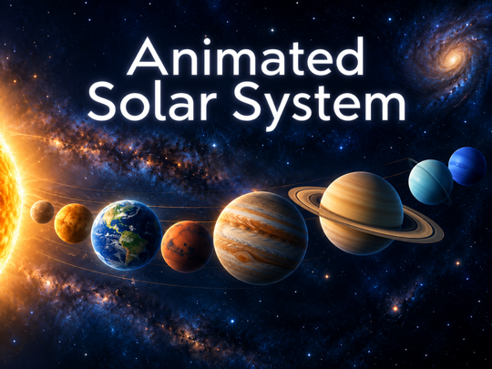

A standalone Roku screensaver
Animated Solar System

An animated solar system with accurate planetary positions from bundled astronomy data within its supported dates, plus your local time and date.
Animated Solar System combines representative planet imagery with bundled astronomy data. Its schematic overview includes the Sun, eight planets and the Moon. Distances and sizes are adjusted for readability; it is not a physical-scale model.
Made for an idle television
Playback is passive. Use your Roku remote to dismiss it. Display preferences, optional planet names and Credits are available in the separate screensaver settings.
Works with bundled content
The screensaver uses local data and artwork. No app account is required. Historical surfaces and clouds are representative imagery, not live observations. When the bundled position tables are outside their supported dates, an artistic fallback keeps the scene usable.
Help and policies
Visit Support for setup and troubleshooting, Privacy for information handling, Terms for permitted use, or Credits for sources and licenses.